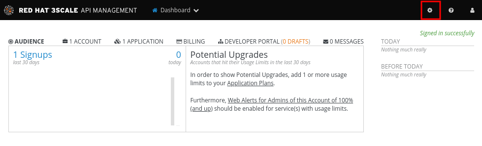
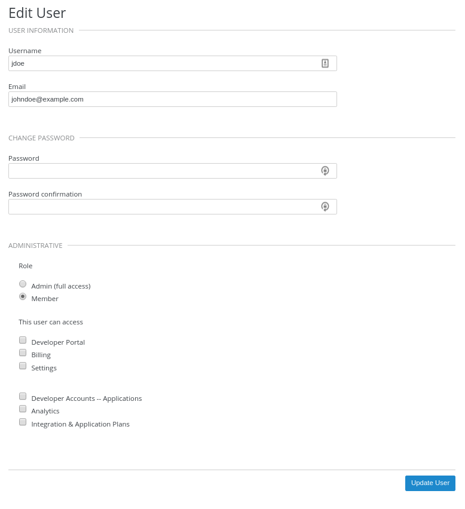

Getting started with Red Hat Managed Integration
| Refer to the Release Notes for the latest information about Managed Integration. |
This document provides instructions for new users of Managed Integration.
Overview of Red Hat Managed Integration
Red Hat Managed Integration delivers managed integration services hosted on the leading container platform, enabling diverse developers to engage in agile, microservices-based application development. Managed Integration enables your team to develop, build and deploy enterprise integration solutions on an OpenShift Dedicated cluster managed by Red Hat. Managed Integration enables developers adopt event-based computing and API-based development with lightweight, loosely coupled, self-service and flexible components. Managed Integration enables the operations team focus on high value objectives while Red Hat manage the infrastructure. All the applications and services are protected by Red Hat Single Sign-On.
Solution Explorer
The Solution Explorer presents links to the applications available in a Managed Integration cluster and provides Solution Patterns that guide users through the process of creating various integrated solutions using these applications.
Applications available in Solution Explorer
Managed Integration provides access to the following consoles:
-
OpenShift, the OpenShift cluster console.
-
API Designer, the Apicurito RESTful API visual designer.
-
Red Hat 3scale API Management, a platform that provide RESTful API Management.
-
Red Hat AMQ, fast, lightweight, and secure messaging for Internet-scale applications.
-
Red Hat CodeReady Workspaces, a developer workspace server and cloud IDE.
-
Red Hat Developer Launcher, a platform for continuous application delivery, with a set of templates.
-
Red Hat Fuse Online, a facility to obtain data from an application or service, operate on that data, and then send the data to another application or service without writing code.
-
Push Notifications, a service to push notifications to Android and iOS devices.
-
Red Hat Single Sign-On, a single sign-on solution for web apps and RESTful web services. Two instances are available as described in About Single Sign-On instances.
Most applications are available in the Solution Explorer, after you first log in. However:
-
If Red Hat AMQ Online is not available, the Start service button is displayed. Click Start service to provision it.
-
You automatically have access to a shared instance of Fuse Online from the Applications menu, and if you start a Solution Pattern, you also provision an instance of Fuse Online which is not shared with other cluster users.
-
About Solution Patterns
Solution Patterns are tutorials available in Managed Integration. The default Solution Patterns guide you through the following scenarios:
-
Integrating message-oriented middleware with a RESTful API using AMQ Online
-
Protecting Applications using Red Hat Single Sign-On (SSO)
-
Managing and protecting APIs using API management
-
Low-code API development and SaaS integration
In addition, there is a Data Sync Solution Pattern using GraphQL Solution Pattern for mobile and web developers.
These Solution Patterns are available in the Solution Explorer.
About the customer-admin user
You access your cluster using the credentials for the customer-admin user received in the Welcome email. This user can:
-
access the OpenShift cluser with the permissions of the Dedicated cluster administrator Role, including read-only access to the Fuse Online project.
-
access the services available from the Solution Explorer with administrator privileges, for example:
-
3scale admin access, that is, full access to all areas and services.
-
the
customer-adminuser has the manage-user, view-realm and manage-identity-providers roles in the managed integration SSO instance as described in the Red Hat Single Sign-On documentation
-
See the Release Notes for links to the associated product documentation.
The customer-admin user is a single account with the privilege to create users in your Managed Integration cluster. If you require additional users with customer-admin user privileges, contact Red Hat Support.
|
About Single Sign-On instances
| Managed Integration SSO instance | Customer Application SSO instance | |
|---|---|---|
Usage |
Create the users of the cluster applications accessible from Solution Explorer, typically developers and integration engineers. Red Hat manages and provides limited access to this instance. For example, you can implement user federation with this instance, but you cannot create a realm. |
Define the identities of the end users of the solution developed and hosted on Managed Integration. Red Hat manages this instance, however the customer-admin user has admin level privileges to configure this instance. |
Solution Explorer link |
Red Hat Single Sign-On (Cluster) |
Red Hat Single Sign-On When you click this link the first time an Account already exists message and an Add to existing account option are displayed. Choose this option. After logging in as the |
User access |
|
A user named |
Permissions |
Can create users in the Can add an Identity Provider in the |
Can create users in the Can add an Identity Provider in the Can create new and manage realms. |
Documentation |
|
Red Hat recommends that you define users of the solution you are developing in the Customer Application SSO instance.
For example, if you use Managed Integration to develop an solution named Typically, you only use the Customer Application SSO instance for end users; however, you have the privileges required to use it for developer related activities. For example, if a developer wanted to use Microcks, that developer could create associated users in this instance. |
Managing Users in the Managed Integration SSO instance
You manage users in the context of a Red Hat Single Sign-On realm. A realm manages a set of users, credentials, roles, and groups. A user belongs to a realm and can log in to this realm.
| Red Hat recommends setting up an identity provider in each Red Hat Single Sign-On realm as described in the Identity Brokering documentation. For example, set up Active Directory as an OIDC provider to avoid managing the same users in different realms. |
Accessing the Red Hat Single Sign-On administration console
To access the Red Hat Single Sign-On administration console:
-
Navigate to the Red Hat Solution Explorer URL that you received in the Welcome email. If asked for credentials, log in as
customer-adminuser. -
Click the Red Hat Single Sign-On link available in the Applications panel.
Viewing Users in the Red Hat Single Sign-On administration console
-
You have logged in to the Red Hat Single Sign-On administration console.
To view the user list:
-
Navigate to the Users menu. The search box at the top of the page can be used to query the list and only display users that match your criteria.
-
Click the View all users button at the top of the page. This displays the list of users currently available in the Managed Integration environment.
Creating users in the Red Hat Single Sign-On administration console
-
You have logged in to the Red Hat Single Sign-On administration console.
To create a user:
-
Navigate to the Users menu.
-
Click the Add User button at the top right corner of the page.
-
Enter the user information:
-
Enter values for
UsernameandEmail. -
Set
User Enabledto ON. -
Set
Email Verifiedto ON. This ensures that the user account will be activated in 3scale.
This step does not automatically send an email to new users. -
-
Click the Save button to create the user.
|
You can also import a JSON file with user information as described in the Red Hat Single Sign-On documentation. |
The following example JSON file imports two users:
{ "users": [
{
"username": "jdoe",
"enabled": true,
"emailVerified": true,
"email": "johndoe@example.com",
"firstName": "John",
"lastName": "Doe",
"realmRoles": ["offline_access", "uma_authorization"],
"clientRoles": {
"account": ["manage-account", "view-profile"]
},
"groups": [],
"attributes": {},
"credentials": [{
"type" : "password",
"value" : "Password1"
}]
},
{
"username": "msmith",
"enabled": true,
"emailVerified": true,
"email": "marysmith@example.com",
"firstName": "Mary",
"lastName": "Smith",
"realmRoles": ["offline_access", "uma_authorization"],
"clientRoles": {
"account": ["manage-account", "view-profile"]
},
"groups": [],
"attributes": {},
"credentials": [{
"type" : "password",
"value" : "Password1"
}]
}
]
}Setting user passwords in the Red Hat Single Sign-On administration console
-
You have logged in to the Red Hat Single Sign-On administration console.
To set user passwords:
-
Navigate to the Users menu.
-
Find the user you wish to edit and click on the Edit button associated with the user.
-
Go to the Credentials tab.
-
Set a password for the user and click the Reset Password button to save.
-
If you require the user to update their password upon logging in, set the
Temporaryfield to ON.
Deleting users in the Red Hat Single Sign-On administration console
-
You have logged in to the Red Hat Single Sign-On administration console.
To delete users:
-
Navigate to the Users menu
-
Click the View all users button at the top of the page.
-
Find the user you wish to delete
-
Click the Delete button associated to the user you wish to remove.
-
Click Delete in the confirmation box to proceed.
Managing Red Hat 3scale API Management Platform users
A user created in Red Hat Single Sign-On can log in to the 3scale console; however, the user’s account is only created in 3scale after that initial login. The new user is assigned the role member and by default does not have permissions set. The user role and permission can only be set once a user account is created in 3scale.
To ensure you create users with the correct roles for Red Hat 3scale API Management Platform:
-
Create a user using the Red Hat Single Sign-On administration console.
-
Ensure the user logs in to the Red Hat 3scale API Management Platform console.
-
Log in to the Red Hat 3scale API Management Platform administration console and assign roles to the user.
Accessing the Red Hat 3scale API Management Platform administration console
To access the Red Hat 3scale API Management Platform administration console:
-
Navigate to the Red Hat Solution Explorer URL that you received in the Welcome email. If asked for credentials, log in as the
customer-adminuser. -
Click the Red Hat 3scale API Management Platform link available in the Applications panel.
Setting user roles and permissions in Red Hat 3scale API Management Platform administration console
-
You have logged in to the Red Hat 3scale API Management Platform administration console using the Authenticate through Red Hat Single Sign-On facility.
All users in 3scale are created as a member with no permissions set by default.
|
To change permissions for a 3scale user:
-
Navigate to Account Settings by clicking the gear icon in the top right of the 3scale console.

-
Select Listings from the Users menu. A list of users is displayed.
-
Find the user you want to change, and click on the Edit button for that user.
-
On the Edit User page, change the user’s roles and permissions:

For example, you can give the user the Admin role.
-
Click the Update User button to save your changes.
Deleting users in the Red Hat 3scale API Management Platform administration console
-
You have logged in to the Red Hat 3scale API Management Platform administration console using the Authenticate through Red Hat Single Sign-On facility.
To delete 3scale users:
-
Navigate to Account Settings.
-
Go to Users > Listings.
-
Find the user you wish to delete.
-
Click the Delete button associated with that user.
Giving users permissions to view integration logs and perform 3scale service discovery
This procedure describes how to add the view role for a user if that user requires either of the following:
-
Service Discovery in 3scale, which can be used to add Fuse Online services automatically
-
Access to Fuse Online integration logs
-
Log in to OpenShift using
ocand thecustomer-admincredentials. -
Run the following command, where
<userid>is the user you want to give the role to:oc adm policy add-role-to-user view <userid> -n openshift-fuse
-
Adding Solution Patterns to your Red Hat Managed Integration cluster
The home page of Solution Explorer lists the Solution Patterns from all the Git repositories you are subscribed to. Any user can add Solution Patterns to your cluster.
For more information on writing Solution Patterns, see documentation on Creating Solution Patterns.
Note: You can access the Git repository that contains the Solution Pattern source code by clicking the Repository link located in the upper right corner of each group of Solution Patterns on the All Solutions Patterns tab in the Solution Explorer.
This procedure describes how to subscribe your cluster to a Git repository that contains Solution Patterns.
-
Navigate to the Solution Explorer.
-
Click the gear icon in the top right to display the Application settings screen.
-
Enter the URLs of the Solution Pattern repositories you want to add to your cluster. For example:
https://github.com/integr8ly/example-customisations.git#master
-
Enter one URL per line.
-
To include a specific branch, use the syntax
#<branch-name>. -
List URLs in the order you want them to appear on the homepage.
-
-
Click Save.
Editing the value triggers an automatic redeployment of Solution Explorer.
-
When the deployment is complete, refresh your browser.
You should now see new Solution Patterns available from the dashboard.
If the Git repository is updated with new content, Solution Explorer is not automatically updated. To redeploy:
-
Open the Openshift Console.
-
Find and open the webapp project.
-
Find and open the tutorial-web-app deployment.
-
Click the Deploy button.
-
Creating Red Hat Managed Integration Solution Patterns
About creating Solution Patterns
To write Solution Patterns you require a knowledge of:
-
Asciidoc - a lightweight markup language, similar to markdown
-
JSON - a lightweight format for storing and transporting data
-
Git - you must push your Asciidoc and JSON files to a Git repository
-
OpenShift - you can add Solution Patterns using the OpenShift console
A simple Solution Pattern only requires that you edit an Asciidoc file, for example:
= Demonstrating features (1)
A short description for the feature. (2)
== Doing a task (3)
. Do this first: (4)
. Do this second:| 1 | Solution Pattern title, you can only have a single level 1 heading per file. |
| 2 | The first line of the introduction is displayed as a tag line for the Solution Pattern and displayed on the Solution Explorer home page. Do not use AsciiDoc attributes in this line because they are not displayed correctly on the homepage. |
| 3 | A task contains one or more subtasks (level 3 headings) |
| 4 | A numbered list of steps the user must perform. |
Getting started
To get started with Solution Pattern development you can edit the template repository and learn about the components of a Solution Pattern.
Downloading the template
The template contains the directory structure along with a sample Solution Pattern and manifest file.
-
Clone the template repository
git clone https://github.com/integr8ly/walkthrough-template.git -
Change to the
walkthrough-templatedirectory:cd walkthrough-template
Understanding the file structure
.
├── walkthroughs-config.json (1)
└── walkthroughs(2)
├── <identifier> (3)
│ ├── images (4)
│ │ └── image.png
│ ├── walkthrough.adoc (5)
│ └── walkthrough.json (6)
├── <walkthrough2-id> (3)
└── <walkthrough3-id> (3)| 1 | This is an optional file that defines metadata for the set of Solution Patterns in the repository. |
| 2 | This is a required directory. All Solution Patterns are defined under walkthroughs. |
| 3 | The directory name of a Solution Pattern. This is also displayed in the URL of Solution Explorer. |
| 4 | All images for the Solution Pattern. |
| 5 | walkthrough.adoc is where the content of the Solution Pattern is written in Asciidoc format. |
| 6 | walkthrough.json is the manifest file of the Solution Pattern where you can define extra dependencies. |
The default walkthrough.json does not define any dependent services:
{
"dependencies": {
"repos": [],
"serviceInstances": []
}
}Committing your Solution Patterns to a remote repository
You can edit the walkthrough.adoc file and push your changes to GitHub.
-
Create a new remote repository and take note of the remote URL.
-
Add the remote to your local clone.
git remote add upstream <remote URL> -
Commit your changes.
-
Push your changes.
git push -u upstream master
Editing overview sections of a Red Hat Managed Integration Solution Pattern
The first section of the walkthrough.adoc describes your Solution Pattern,it provides an overview of the purpose of the Solution Pattern.
The overview is displayed when a user clicks on the Solution Pattern in Solution Explorer.
-
The overview is defined by a first level heading (in AsciiDoc a line begining with
=) and finishes at the next second level heading (==). -
The title of the overview becomes the name of the Solution Pattern.
-
The overview heading must be followed by a paragraph giving a short introduction to the Solution Pattern in one or two sentences. This description is displayed in the Solution Explorer dashboard card for the Solution Pattern.
-
You have created a repository using the Solution Pattern template.
-
You have added the Solution Pattern repository to your cluster as described in Adding Solution Patterns.
To add an overview section using the template respository:
-
Edit the
walkthroughs/1-template-walkthrough/walkthrough.adocfile. -
Change the title of the Solution Pattern, for example:
= My first Solution Pattern
-
Add an introduction paragraph to your preamble.
-
Add another paragraph with more information about the Solution Pattern.
-
Commit your changes
git commit -am "add overview"
-
Push your change to the remote repository
git push upstream master
Editing task sections of a Red Hat Managed Integration Solution Pattern
-
You have created a repository using the Solution Pattern template.
-
You have added the Solution Pattern repository to your cluster as described in Adding Solution Patterns.
Tasks are procedures that you write as a section of the walkthrough.adoc file, the section being defined by a second level heading (==).
The template already contains a sample task, you can change it as follows:
-
Edit the
walkthroughs/1-template-walkthrough/walkthrough.adocfile. -
Change the task title, for example,
== Doing the first task. -
Write a short introduction to the task.
-
Change the task timing estimate. Each task has an attribute to communicate the approximate time that the task should take the user to perform.
This is displayed in the Solution Pattern overview as part of the task list.
For example to change the estimated time for the first task to 12 minutes:
[time=12] == Doing the first task
-
Save, commit and push your changes.
The content of the Solution Explorer does not change automatically after a change in the subscribed repository. You must redeploy the Solution Explorer for the change to be visible. -
Redeploy the Solution Explorer:
-
Navigate to the webapp project in OpenShift.
-
Click on the tutorial-web-app deployment config.
-
Click the Deploy button.
You can create another level of subtasks by creating a third level heading ( ===). Subtasks are displayed in the Solution Explorer on the parent task page. -
Editing procedures of a Red Hat Managed Integration Solution Pattern
A procedure is a set of steps that you perform to complete a task or subtask.
Write procedures using AsciiDoc numbered lists.
Prepend each step with a . to create a simple numbered list.
-
You have created a repository using the Solution Pattern template.
-
You have added the Solution Pattern repository to your cluster as described in Adding Solution Patterns.
To edit a procedure in the template respository:
-
Edit the
walkthroughs/1-template-walkthrough/walkthrough.adocfile. -
Edit the numbered list:
. First step . Second step . Third step
-
Save, commit and push your changes.
-
Redeploy the Solution Explorer:
-
Navigate to the webapp project in OpenShift.
-
Click on the tutorial-web-app deployment config.
-
Click the Deploy button.
-
Editing Solution Pattern resources for a Red Hat Managed Integration Solution Pattern
The Solution Explorer can display helpful information and links on the right hand side panel.
-
You have created a repository using the Solution Pattern template.
-
You have added the Solution Pattern repository to your cluster as described in Adding Solution Patterns.
To add a Solution Pattern resources:
-
Edit the
walkthroughs/1-template-walkthrough/walkthrough.adocfile. -
Add Solution Pattern resources using block attributes at the end of the overview section, for example:
[type=walkthroughResource,serviceName=openshift] .OpenShift **** * link:{openshift-host}[Openshift Console, window="_blank"] ****-
Setting
serviceNameis optional. -
If
serviceNameis set to the name of a middleware service, an icon indicating the service status is displayed next to the resource. -
For a list of default services, see the value for DEFAULT_SERVICES.
-
Setting the
window="_blank"parameter for a Solution Pattern resource link is also optional, but ensures that the target of the link displays in a separate browser tab.
You can only define Solution Pattern resources in the overview section. -
-
Save, commit and push your changes.
-
Redeploy the Solution Explorer:
-
Navigate to the webapp project in OpenShift.
-
Click on the tutorial-web-app deployment config.
-
Click the Deploy button.
-
Editing task resources for a Red Hat Managed Integration Solution Pattern
The Solution Explorer can display helpful information and links on the right hand side panel that are specific to a task. Solution Pattern resources are displayed for every task, whereas task resources typically change as the user navigates the Solution Pattern.
-
You have created a repository using the Solution Pattern template.
-
You have added the Solution Pattern repository to your cluster as described in Adding Solution Patterns.
To add task resources:
-
Edit the
walkthroughs/1-template-walkthrough/walkthrough.adocfile. -
At the end any task section, add the following:
[type=taskResource] .Useful links **** * link:https://google.com[Task related link] ****
-
Save, commit and push your changes.
-
Redeploy the Solution Explorer:
-
Navigate to the webapp project in OpenShift.
-
Click on the tutorial-web-app deployment config.
-
Click the Deploy button.
-
Adding verifications to a Red Hat Managed Integration Solution Pattern
Verifications are interactive elements in a Solution Pattern that confirm whether a user has successfully completed a procedure. They are questions presented to the user, which can be answered with either a Yes or No response.
| Every procedure in a task or subtask requires a verification. |
-
You have created a repository using the Solution Pattern template.
-
You have added the Solution Pattern repository to your cluster as described in Adding Solution Patterns.
To add a verification:
-
Edit the
walkthroughs/1-template-walkthrough/walkthrough.adocfile. -
At the end of the procedure section, following the numbered list add:
[type=verification] Check that the dashboard of service X reports no errors. -
Add the following block to cater for users that answer the question with
No:[type=verificationFail] Try turning it off and on again. -
Save, commit and push your changes.
-
Redeploy the Solution Explorer:
-
Navigate to the webapp project in OpenShift.
-
Click on the tutorial-web-app deployment config.
-
Click the Deploy button.
-
Adding attributes to a Red Hat Managed Integration Solution Pattern
Attributes are used to make external variable users performing a Solution Pattern.
The syntax for using attributes is {<attribute name>}. Solution Patterns have access to a number of predefined attributes:
-
If a middleware service defines a route you can access it using
{route-<route name>-host}. -
The OpenShift console is available as
{openshift-host}.
Other attributes that are available to Solution Pattern authors are:
-
Default attributes:
-
OpenShift App Host:
{openshift-app-host} -
CodeReady Workspaces URL:
{che-url}. -
Fuse URL:
{fuse-url} -
Launcher URL:
{launcher-url} -
API Management URL:
{api-management-url} -
AMQ Online URL:
{enmasse-url} -
AMQ Online Broker URL:
{enmasse-broker-url} -
AMQ Online Credential Username:
{enmasse-credentials-username} -
AMQ Online Credential Password:
{enmasse-credentials-password}
-
-
You have created a repository using the Solution Pattern template.
-
You have added the Solution Pattern repository to your cluster as described in Adding Solution Patterns.
To add a link to the OpenShift console in the Solution Pattern:
-
Add another step to the numbered list in your procedure:
. Click on the link to the OpenShift console.
-
Save, commit and push your changes.
-
Redeploy the Solution Explorer:
-
Navigate to the webapp project in OpenShift.
-
Click on the tutorial-web-app deployment config.
-
Click the Deploy button.
-
Adding custom services to a Red Hat Managed Integration Solution Pattern
You can create services from the OpenShift catalog in the cluster as part of the Solution Pattern startup process.
You can also link to the URLs associated with those services in your walkthrough.adoc file.
-
You have created a repository using the Solution Pattern template.
-
You have added the Solution Pattern repository to your cluster as described in Adding Solution Patterns to your Red Hat Managed Integration cluster.
-
Some experience with the
occommand. See Getting Started with the OpenShift CLI for more information aboutoccommand.
-
Find the name of the service you want to provision:
-
Log in to the OpenShift console.
-
Click your username in the top right corner and choose Copy Login Command from the menu.
-
Log in to the OpenShift CLI using the
ocon your clipboard. -
Run the following command to list all the service names available from your cluster catalog:
oc get clusterserviceclasses -o custom-columns="Display Name (From Service Catalog):.spec.externalMetadata.displayName, Identifier (clusterServiceClassExternalName):.spec.externalName"
The output lists all the services available in two columns:
-
Display Name (From Service Catalog)
-
Identifier (clusterServiceClassExternalName)
-
-
Choose the service you want to use, and note the value in the
Identifier (clusterServiceClassExternalName)column.For example, to use the
CakePHP + MySQL (Ephemeral)service in your custom Solution Pattern, note the valuecakephp-mysql-example.
-
-
Create a
walkthrough.jsonwith the following contents to provision thecakephp-mysql-exampleservice:{ "dependencies": { "repos": [], "serviceInstances": [ { "metadata": { "name": "cakephp-mysql-example" }, "spec": { "clusterServiceClassExternalName": "cakephp-mysql-example", "clusterServicePlanExternalName": "default" } } ] } } -
Add your Solution Pattern to the cluster as described in Adding Solution Patterns.
-
Navigate the Solution Pattern to trigger the provisioning of the custom service, for example, the
cakephp-mysql-exampleservice. -
Log in to the OpenShift console.
-
Navigate to the custom project in OpenShift.The project is named using the pattern
<username>-<walkthrough-id>. -
Open Routes from the Applications menu.
-
Note the Name of the route you want to reference in your Solution Pattern tasks. For example,
cakephp-mysql-example. -
Edit the
walkthrough.adocfile and use the{route-<route-name>-host}pattern, whenever you want the route URL to appear. For example, to insert a step that asks the user of the Solution Pattern to log in to the CakePHP app:. Log into the link:{route-cakephp-mysql-example-host}[CakePHP app].If you want Asciidoc attributes to render values in code blocks, you must start the code block with [subs="attributes"]. -
Redeploy the tutorial-web-app to pick up changes to your Solution Pattern.
-
Log in to the Solution Explorer using a different username to test the Solution Pattern.
Defining metadata for your Solution Pattern repository
By default, the Solution Patterns from a repository are displayed in Solution Explorer with a title corresponding to your repository name. You can add a walkthroughs-config.json file with the following contents if, for example, you want to title the group My Solution Patterns:
{
"prettyName": "My Solution Patterns"
}Previewing your Solution Pattern
-
Log in to the Solution Explorer
-
Follow the steps described in Adding Solution Patterns.
Adding custom identity providers to Red Hat Managed Integration
By default, Managed Integration includes a Single Sign-On solution using Red Hat Single Sign-On (RHSSO). This lets users log in to all the middleware services using the same accounts.
Red Hat Single Sign-On allows an administrator to use identity brokering for the Managed Integration realm.
This section describes how to add a custom identity provider to Red Hat Single Sign-On.
-
You are logged in to OpenShift as the
customer-adminuser.
-
Log in to the Red Hat Single Sign-On administration console using the URL and credentials you received in your welcome email.
-
Make sure the
openshiftrealm is selected on the top left drop down. -
In the menu navigate to
Identity Providersand pick a provider from the drop down. -
Follow the instructions in the Red Hat Single Sign-On documentation to add a new identity provider.
Creating custom URLs for 3scale APIs
| You cannot delete routes created using the procedure described below. |
If you use 3scale to manage your API, you might need to use a specific host and format for the API URL.
For example, you might want to expose an API as https://mydomain.com/v1/getStuff.
To use a custom domain, you must create a route in the OpenShift 3scale project as described below.
-
the
customer-adminuser credentials -
a custom domain registration
A new OpenShift route for the public has to be created.
-
Log in as
customer-admin:$ oc login -u customer-admin -
Create a file named
custom-route.yamlusing the appropriate values for<route name>and<route host>:apiVersion: route.openshift.io/v1 kind: Route metadata: name: <route name> namespace: openshift-3scale spec: host: <route host> port: targetPort: gateway tls: insecureEdgeTerminationPolicy: None termination: edge to: kind: Service name: apicast-staging weight: 100 wildcardPolicy: None -
Create the route:
$ oc create -f ./custom-route.yaml -
Set up your public base URL in APIcast as described in the 3scale documentation.
-
See the Public Base URL documentation for an introduction to custom URLs.
Enabling service discovery in 3scale
By default, a Managed Integration user cannot perform service discovery in 3scale.
To enable service discovery of APIs created in the shared Fuse Online instance:
-
Log in to OpenShift as the
customer-adminuser from the command line. -
Enter the following command to enable the
<username>user perform service discovery of Fuse Online APIs:
$ oc adm policy add-role-to-user view <user-name> -n fuse-
Service Discovery 3scale documentation.
-
Service Discovery Fuse documentation.
Managing images
Managed Integration allows you to create and push images to your cluster. For the Managed Integration cluster, the registry is located at:
registry.<clusterid>.openshift.com
where <clusterid> is the unique identifier for your cluster.
-
Use the instructions in the OpenShift documentation to access the registry.
-
Follow the procedures for Managing Images.